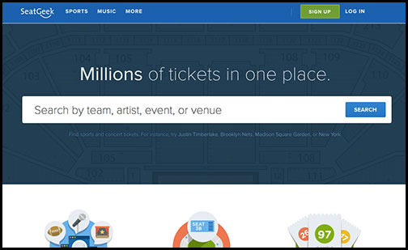
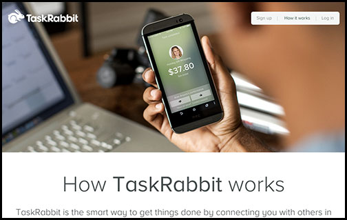

SeatGeak

This website is great at aggregating large amounts of data and simplifying the information that is presented in a very appealing manner with a simplistic and powerful design.
Space, Size, and Balance. Specifically, I really appreciate the brilliant use of the site's hierarchy which point's to the two main focal points, the company's tag line and search bar. This site's purpose is to allow users to search for tickets from everywhere on the web and their two focal points do an excellent job calling this out.
The first focal point is (the tag line):
The second focal point is (the search bar):
Directly below the two main focal points are three columns each with a centered colorful graphic that suggest a call to navigate further down the page for more information. These info graphics support their own hierarchy as the graphic represents a headline with a text sub-heading and text body copy below. Each column has a call-to-action with a "learn more>" link. Moreover, each element is emphasized when the pointer hovers over the graphic by increasing the opacity of the other two graphics.
Overall, I think the site does a great job managing space, size and balance to provide users with a very easy to follow flow "reducing unnecessary cognitive load".
Reexamination of Space, Size, and Balance. It's hard to critique this site on space, size or balance.
TaskRabbit

This site was designed to inform current and potential customers and taskers about the App based crowd sourcing service connecting two marketplaces.
Space, Size, and Balance. The top of the site is elegant and simple. The positive space consists of a small logo in the upper left hand corner, a small bar with three links in the upper right and a clear image of a smartphone with a screenshot of the company's App. Interestingly, the negative space is a blurred image of a desktop with a computer. I don't think I would have ever considered this negative or white space until covering Unit 2, but since it's blurred with positive elements on it, that's what I'm calling it.
The focal point is a quality photo a hand holding a smartphone with the screen capture of the app. I think the main focal point does a great job calling out that the primary use of this service is provided on an App. My eye is drawn to it immediately.
The second focal point, or sub-heading, is the large text that reads, "How TaskRabbit works."" This clearly indicates that scrolling down the site will inform the user how the service works. The second focal point is:
Reexamination of Space, Size, and Balance. Again, maybe I'm missing something here, but I choose this website because I think it has used space, size, and balance in a very smart way.
Space. Both SeatGeek and TaskRabbit share structural design. The sites both have a centered focal point centered on a large amount of negative space. Both sites also change negative space color to "white" providing contrast and secondary attention to the information be displayed below.
Navigation layout is different on each website. While SeatGeek has a dark negative space bar running across the top to clearly identify multiple navigation links, while TaskRabbit has elements floating in traditional areas in the header of the site.
Size. The size of both site's main focal points are weighted perfectly to attract attention but they don't distract from the other elements of the website.
Each site has a different purpose therefore focal points are different. SeatGeek simply provides a description and a search bar with minimal distraction (similar to Google.com). TaskRabbit's site was built with some functionality, but really serves to inform the user about their App based service. As a result, they have chosen to use an image for their focal point and negative space. It's a very attractive site.
Balance. While the header with the centered focal point is similar with each site, the space below is very different. SeatGeek moves to three columns with graphics all explaining the service in more detail while TaskRabbit retains the single column and describes the service in a very simple to read method without having to leave the index page.
The Lost Art of Thumbnail Sketches:
Creating a Page Layout with Adobe Dreamweaver CS6:
Thumbnail Sketches: PDF or Image